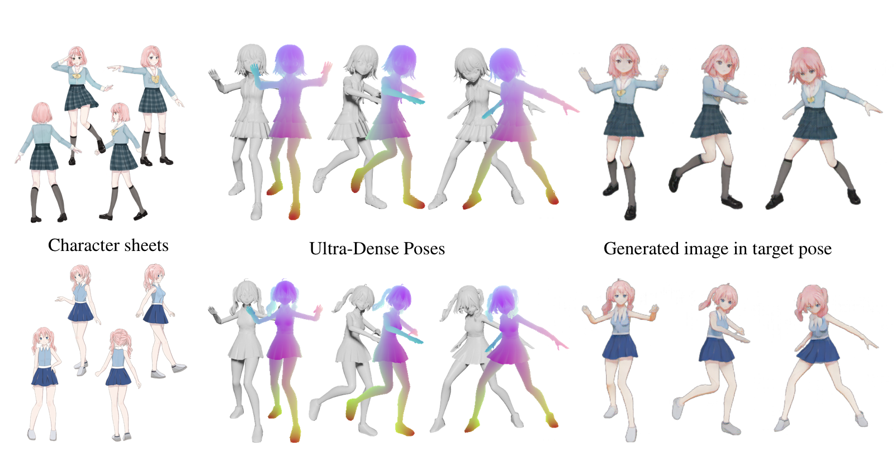

Collaborative Neural Rendering
using Anime Character Sheets
Also known as
Live3D v1
(2020-2021)
Superseded by
Live3D v2
(2022)
[Draft]
[Author's note]
[Code (v2)]
[Demo]

[Demo1] Generate Videos
Your browser does not support the video tag.
Alternative Link on Twitter
[Demo2] Colorize exisiting 3D avatars using drawings
Your browser does not support the video tag.
Alternative Link on Twitter
Fan-made video of using CoNR rendered characters in games
[Demo3] Generate 3D point cloud from drawings
Your browser does not support the video tag.
Alternative Link on Twitter
If you are interested in this project, feel free to contact me!
Twitter
|
Github
|
Discord
|
哔哩哔哩
|
知乎（作者解说）
License: CC-BY 4.0. Demo1 is provided by Megvii Inc and nev. Demo2 and Demo3 are porvided with the help from KurisuMakise004. All of the demo are built with the Live3Dv1 (CoNR) technology.
Website modified from: https://github.com/ajabri/videowalk/blob/master/index.html